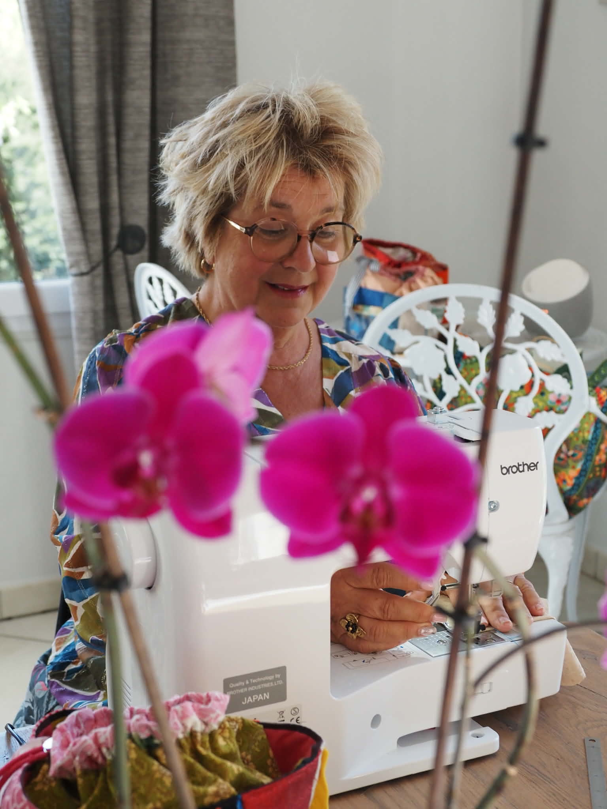
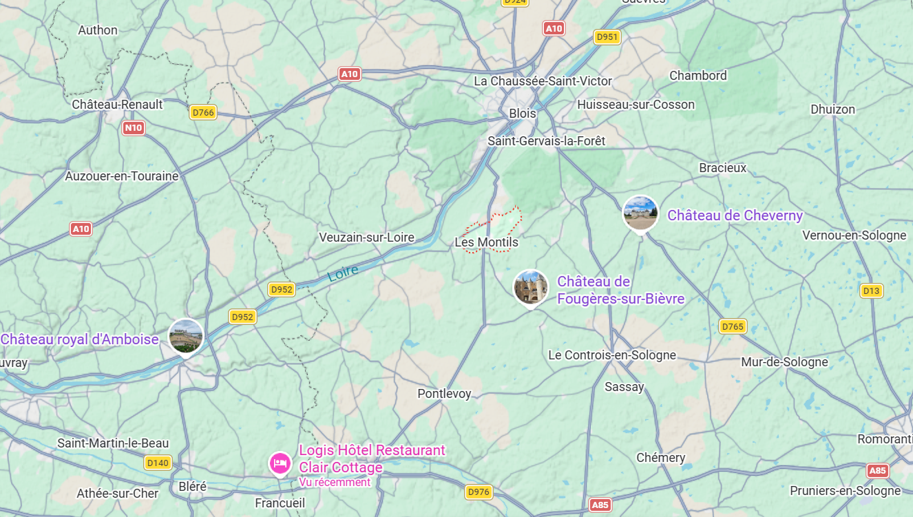

Qui suis-je ?
Bonjour et bienvenue sur mon blog ! Je m'appelle Clo, couturière passionnée. Je pique, je couds, je retouche… Je crée des accessoires, des vêtements pour vous, Mesdames, pour les enfants, pour les poupées. Je réalise aussi des gâteaux de couches pour célébrer les naissances de vos enfants ou petits-enfants.
Entre les fleurs du jardin, le potager et les fils de couture, je trouve mon bonheur.
Ici vous trouverez mes créations, mes conseils et tout mon univers couture. Que ce soit pour une retouche, une réparation ou une création sur mesure, je suis là pour donner vie à vos projets.
Découvrir mes créations
Me rencontrer

- Contactez-moi à l'aide du formulaire
- Je vous réponds dans un délai de 48 à 72 heures
- J'étudie vos projets couture
- Je crée, je retouche, je répare dans un délai déterminé ensemble
- Je vous contacte pour récupérer votre commande
- Retrait possible aux Montils (à 15 minutes de Blois) et dans un rayon de 20 km.
Mes services
Retouches
Votre vêtement préféré ne vous va plus tout à fait ? Je réalise toutes vos retouches sur mesure pour que chaque pièce épouse parfaitement votre silhouette.
Réparation
Un accroc, une fermeture cassée ou une couture défaite ? Je redonne vie à vos vêtements abîmés pour leur offrir une seconde jeunesse.
Création
Vous avez une idée en tête ? Ensemble nous imaginons et confectionnons une pièce unique qui vous ressemble, du choix du tissu jusqu'à la dernière finition.
Upcycling
Transformez vos vêtements oubliés au fond du placard en pièces tendances et originales. Rien ne se jette, tout se réinvente avec un peu de créativité et de fil !